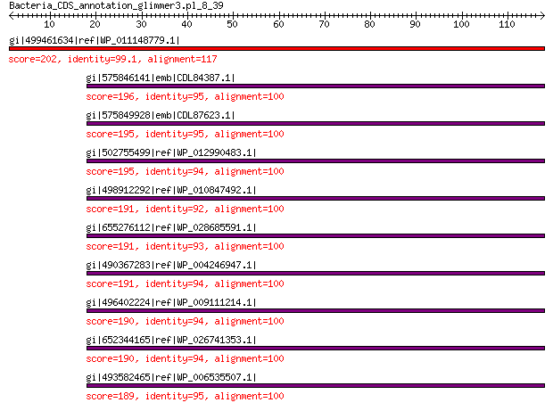

bitscore colors: <40, 40-50 , 50-80, 80-200, >200
 BLASTP 2.2.31+
Reference: Stephen F. Altschul, Thomas L. Madden, Alejandro A.
Schaffer, Jinghui Zhang, Zheng Zhang, Webb Miller, and David J.
Lipman (1997), "Gapped BLAST and PSI-BLAST: a new generation of
protein database search programs", Nucleic Acids Res. 25:3389-3402.
Reference for composition-based statistics: Alejandro A. Schaffer,
L. Aravind, Thomas L. Madden, Sergei Shavirin, John L. Spouge, Yuri
I. Wolf, Eugene V. Koonin, and Stephen F. Altschul (2001),
"Improving the accuracy of PSI-BLAST protein database searches with
composition-based statistics and other refinements", Nucleic Acids
Res. 29:2994-3005.
Database: All non-redundant GenBank CDS translations+PDB+SwissProt+PIR+PRF
excluding environmental samples from WGS projects
49,011,213 sequences; 17,563,301,199 total letters
Query= Bacteria_CDS_annotation_glimmer3.pl_8_39
Length=117
Score E
Sequences producing significant alignments: (Bits) Value
gi|499461634|ref|WP_011148779.1| MULTISPECIES: 50S ribosomal pro... 202 3e-64
gi|575846141|emb|CDL84387.1| 50S ribosomal protein L18 196 6e-62
gi|575849928|emb|CDL87623.1| 50S ribosomal protein L18 195 1e-61
gi|502755499|ref|WP_012990483.1| 50S ribosomal protein L18 195 2e-61
gi|498912292|ref|WP_010847492.1| 50S ribosomal protein L18 191 5e-60
gi|655276112|ref|WP_028685591.1| 50S ribosomal protein L18 191 7e-60
gi|490367283|ref|WP_004246947.1| 50S ribosomal protein L18 191 9e-60
gi|496402224|ref|WP_009111214.1| 50S ribosomal protein L18 190 1e-59
gi|652344165|ref|WP_026741353.1| 50S ribosomal protein L18 190 2e-59
gi|493582465|ref|WP_006535507.1| 50S ribosomal protein L18 189 2e-59
>gi|499461634|ref|WP_011148779.1| MULTISPECIES: 50S ribosomal protein L18 [Photorhabdus]
gi|37528527|ref|NP_931872.1| 50S ribosomal protein L18 [Photorhabdus luminescens subsp. laumondii
TTO1]
gi|253991673|ref|YP_003043029.1| 50s ribosomal protein l18 [Photorhabdus asymbiotica]
gi|73621637|sp|Q7MYG7.1|RL18_PHOLL RecName: Full=50S ribosomal protein L18 [Photorhabdus luminescens
subsp. laumondii TTO1]
gi|36787965|emb|CAE17082.1| 50S ribosomal protein L18 [Photorhabdus luminescens subsp. laumondii
TTO1]
gi|253783123|emb|CAQ86288.1| 50s ribosomal protein l18 [Photorhabdus asymbiotica]
gi|530711205|gb|EQC02066.1| 50S ribosomal protein L18 [Photorhabdus temperata subsp. temperata
M1021]
gi|550875182|gb|ERT14215.1| 50S ribosomal protein L18 [Photorhabdus temperata J3]
gi|572731307|gb|ETS29496.1| LSU ribosomal protein L18P [Photorhabdus temperata subsp. khanii
NC19]
gi|604177071|gb|EYU13812.1| LSU ribosomal protein L18P [Photorhabdus luminescens BA1]
gi|662546838|gb|KER01476.1| LSU ribosomal protein L18P [Photorhabdus temperata subsp. temperata
Meg1]
Length=117
Score = 202 bits (513), Expect = 3e-64, Method: Compositional matrix adjust.
Identities = 116/117 (99%), Positives = 116/117 (99%), Gaps = 0/117 (0%)
Query 1 MDkkaarirratrarrkLQELGATRLVVHRTPRHIYAQVIAPNGSETLVAASTTEKAINE 60
MDKKAARIRRATRARRKLQELGATRLVVHRTPRHIYAQVIAPNGSETLVAASTTEKAINE
Sbjct 1 MDKKAARIRRATRARRKLQELGATRLVVHRTPRHIYAQVIAPNGSETLVAASTTEKAINE 60
Query 61 QLKYTGNKEAAAAVGKVIAERALEKGIKDVSFDRSGFQYHGRVQALADAAREAGLQF 117
QLKYTGNKEAAAAVGK IAERALEKGIKDVSFDRSGFQYHGRVQALADAAREAGLQF
Sbjct 61 QLKYTGNKEAAAAVGKAIAERALEKGIKDVSFDRSGFQYHGRVQALADAAREAGLQF 117
>gi|575846141|emb|CDL84387.1| 50S ribosomal protein L18 [Xenorhabdus szentirmaii DSM 16338]
gi|661559773|emb|CDG16004.1| 50S ribosomal protein L18 [Xenorhabdus doucetiae]
Length=117
Score = 196 bits (498), Expect = 6e-62, Method: Compositional matrix adjust.
Identities = 95/100 (95%), Positives = 99/100 (99%), Gaps = 0/100 (0%)
Query 18 LQELGATRLVVHRTPRHIYAQVIAPNGSETLVAASTTEKAINEQLKYTGNKEAAAAVGKV 77
LQELGATRLVVHRTPRHIYAQVIAPNGSETLVAASTTEKAI+EQLK+TGNKEAAA VGK+
Sbjct 18 LQELGATRLVVHRTPRHIYAQVIAPNGSETLVAASTTEKAISEQLKFTGNKEAAALVGKI 77
Query 78 IAERALEKGIKDVSFDRSGFQYHGRVQALADAAREAGLQF 117
+AERALEKGIKDVSFDRSGFQYHGRVQALADAAREAGLQF
Sbjct 78 VAERALEKGIKDVSFDRSGFQYHGRVQALADAAREAGLQF 117
>gi|575849928|emb|CDL87623.1| 50S ribosomal protein L18 [Xenorhabdus cabanillasii JM26]
Length=117
Score = 195 bits (496), Expect = 1e-61, Method: Compositional matrix adjust.
Identities = 95/100 (95%), Positives = 99/100 (99%), Gaps = 0/100 (0%)
Query 18 LQELGATRLVVHRTPRHIYAQVIAPNGSETLVAASTTEKAINEQLKYTGNKEAAAAVGKV 77
LQELGATRLVVHRTPRHIYAQVIAPNGSETLVAASTTEKAI+EQLK+TGNKEAAA VGK+
Sbjct 18 LQELGATRLVVHRTPRHIYAQVIAPNGSETLVAASTTEKAISEQLKFTGNKEAAAVVGKI 77
Query 78 IAERALEKGIKDVSFDRSGFQYHGRVQALADAAREAGLQF 117
IAERALEKGIK+VSFDRSGFQYHGRVQALADAAREAGLQF
Sbjct 78 IAERALEKGIKNVSFDRSGFQYHGRVQALADAAREAGLQF 117
>gi|502755499|ref|WP_012990483.1| 50S ribosomal protein L18 [Xenorhabdus bovienii]
gi|290477176|ref|YP_003470091.1| 50S ribosomal protein L18 [Xenorhabdus bovienii SS-2004]
gi|289176524|emb|CBJ83333.1| 50S ribosomal subunit protein L18 [Xenorhabdus bovienii SS-2004]
gi|661566758|emb|CDG23160.1| 50S ribosomal protein L18 [Xenorhabdus poinarii G6]
gi|666603401|emb|CDH29082.1| 50S ribosomal subunit protein L18 [Xenorhabdus bovienii str.
Jollieti]
gi|666608313|emb|CDH05724.1| 50S ribosomal subunit protein L18 [Xenorhabdus bovienii str.
oregonense]
gi|666612573|emb|CDH19741.1| 50S ribosomal subunit protein L18 [Xenorhabdus bovienii str.
kraussei Quebec]
gi|666617960|emb|CDG87087.1| 50S ribosomal subunit protein L18 [Xenorhabdus bovienii str.
feltiae France]
gi|666621606|emb|CDG92287.1| 50S ribosomal subunit protein L18 [Xenorhabdus bovienii str.
feltiae Florida]
gi|666628080|emb|CDG99524.1| 50S ribosomal subunit protein L18 [Xenorhabdus bovienii str.
feltiae Moldova]
gi|666631591|emb|CDH31941.1| 50S ribosomal subunit protein L18 [Xenorhabdus bovienii str.
Intermedium]
gi|666634409|emb|CDH25408.1| 50S ribosomal subunit protein L18 [Xenorhabdus bovienii str.
kraussei Becker Underwood]
gi|668988312|emb|CDG95303.1| 50S ribosomal subunit protein L18 [Xenorhabdus bovienii str.
puntauvense]
Length=117
Score = 195 bits (495), Expect = 2e-61, Method: Compositional matrix adjust.
Identities = 94/100 (94%), Positives = 99/100 (99%), Gaps = 0/100 (0%)
Query 18 LQELGATRLVVHRTPRHIYAQVIAPNGSETLVAASTTEKAINEQLKYTGNKEAAAAVGKV 77
LQELGATRLVVHRTPRHIYAQVIAPNGSETLVAASTTEKAI+EQLK+TGNKEAAA VGK+
Sbjct 18 LQELGATRLVVHRTPRHIYAQVIAPNGSETLVAASTTEKAISEQLKFTGNKEAAAVVGKI 77
Query 78 IAERALEKGIKDVSFDRSGFQYHGRVQALADAAREAGLQF 117
+AERALEKGIK+VSFDRSGFQYHGRVQALADAAREAGLQF
Sbjct 78 VAERALEKGIKNVSFDRSGFQYHGRVQALADAAREAGLQF 117
>gi|498912292|ref|WP_010847492.1| 50S ribosomal protein L18 [Xenorhabdus nematophila]
gi|300721382|ref|YP_003710653.1| 50S ribosomal protein L18 [Xenorhabdus nematophila ATCC 19061]
gi|297627870|emb|CBJ88416.1| 50S ribosomal subunit protein L18 [Xenorhabdus nematophila ATCC
19061]
gi|484362903|emb|CCW30292.1| 50S ribosomal protein L18 [Xenorhabdus nematophila F1]
Length=117
Score = 191 bits (486), Expect = 5e-60, Method: Compositional matrix adjust.
Identities = 92/100 (92%), Positives = 98/100 (98%), Gaps = 0/100 (0%)
Query 18 LQELGATRLVVHRTPRHIYAQVIAPNGSETLVAASTTEKAINEQLKYTGNKEAAAAVGKV 77
LQELGATRLVVHRTPRHIYAQVIAPNGSETLVAASTTEKAI+EQLK+TGNK+AAA VGK+
Sbjct 18 LQELGATRLVVHRTPRHIYAQVIAPNGSETLVAASTTEKAISEQLKFTGNKDAAAVVGKI 77
Query 78 IAERALEKGIKDVSFDRSGFQYHGRVQALADAAREAGLQF 117
+AERALEKGI +VSFDRSGFQYHGRVQALADAAREAGLQF
Sbjct 78 VAERALEKGITNVSFDRSGFQYHGRVQALADAAREAGLQF 117
>gi|655276112|ref|WP_028685591.1| 50S ribosomal protein L18 [Phaseolibacter flectens]
Length=117
Score = 191 bits (484), Expect = 7e-60, Method: Compositional matrix adjust.
Identities = 93/100 (93%), Positives = 96/100 (96%), Gaps = 0/100 (0%)
Query 18 LQELGATRLVVHRTPRHIYAQVIAPNGSETLVAASTTEKAINEQLKYTGNKEAAAAVGKV 77
L+ELGATRLVVHRTPRHIYAQVIAPNGSE LVAASTTEKAI EQLKYTGNK+AA AVGK
Sbjct 18 LKELGATRLVVHRTPRHIYAQVIAPNGSEVLVAASTTEKAITEQLKYTGNKDAAIAVGKA 77
Query 78 IAERALEKGIKDVSFDRSGFQYHGRVQALADAAREAGLQF 117
IAERA+EKGIKDVSFDRSGFQYHGRVQALADAAREAGLQF
Sbjct 78 IAERAIEKGIKDVSFDRSGFQYHGRVQALADAAREAGLQF 117
>gi|490367283|ref|WP_004246947.1| 50S ribosomal protein L18 [Proteus mirabilis]
gi|197287084|ref|YP_002152956.1| 50S ribosomal protein L18 [Proteus mirabilis HI4320]
gi|529238933|ref|YP_008399792.1| 50S ribosomal protein L18 [Proteus mirabilis BB2000]
gi|226723363|sp|B4F1K0.1|RL18_PROMH RecName: Full=50S ribosomal protein L18 [Proteus mirabilis HI4320]
gi|194684571|emb|CAR46412.1| 50S ribosomal protein L18 [Proteus mirabilis HI4320]
gi|227165000|gb|EEI49839.1| ribosomal protein L18 [Proteus mirabilis ATCC 29906]
gi|404595460|gb|EKA96004.1| 50S ribosomal protein L18 [Proteus mirabilis WGLW6]
gi|404600162|gb|EKB00610.1| 50S ribosomal protein L18 [Proteus mirabilis WGLW4]
gi|529189971|gb|AGS61731.1| 50S ribosomal protein L18 [Proteus mirabilis BB2000]
Length=117
Score = 191 bits (484), Expect = 9e-60, Method: Compositional matrix adjust.
Identities = 94/100 (94%), Positives = 96/100 (96%), Gaps = 0/100 (0%)
Query 18 LQELGATRLVVHRTPRHIYAQVIAPNGSETLVAASTTEKAINEQLKYTGNKEAAAAVGKV 77
LQELGATRLVVHRTPRHIYAQVIAPNGSETLVAASTTEKAI EQLK TGNKEAAA VGK+
Sbjct 18 LQELGATRLVVHRTPRHIYAQVIAPNGSETLVAASTTEKAIIEQLKNTGNKEAAAVVGKI 77
Query 78 IAERALEKGIKDVSFDRSGFQYHGRVQALADAAREAGLQF 117
+AERALEKGIK VSFDRSGFQYHGRVQALADAAREAGLQF
Sbjct 78 VAERALEKGIKSVSFDRSGFQYHGRVQALADAAREAGLQF 117
>gi|496402224|ref|WP_009111214.1| 50S ribosomal protein L18 [Brenneria sp. EniD312]
gi|353673868|gb|EHD19901.1| ribosomal protein L18 [Brenneria sp. EniD312]
Length=117
Score = 190 bits (483), Expect = 1e-59, Method: Compositional matrix adjust.
Identities = 94/100 (94%), Positives = 95/100 (95%), Gaps = 0/100 (0%)
Query 18 LQELGATRLVVHRTPRHIYAQVIAPNGSETLVAASTTEKAINEQLKYTGNKEAAAAVGKV 77
LQELGATRLVVHRTPRHIYAQVIAPNGSE LVAAST EKAI EQLKYTGNK+AA AVGK
Sbjct 18 LQELGATRLVVHRTPRHIYAQVIAPNGSEVLVAASTVEKAIAEQLKYTGNKDAAIAVGKA 77
Query 78 IAERALEKGIKDVSFDRSGFQYHGRVQALADAAREAGLQF 117
IAERALEKGIKDVSFDRSGFQYHGRVQALADAAREAGLQF
Sbjct 78 IAERALEKGIKDVSFDRSGFQYHGRVQALADAAREAGLQF 117
>gi|652344165|ref|WP_026741353.1| 50S ribosomal protein L18 [Lonsdalea quercina]
Length=117
Score = 190 bits (482), Expect = 2e-59, Method: Compositional matrix adjust.
Identities = 94/100 (94%), Positives = 95/100 (95%), Gaps = 0/100 (0%)
Query 18 LQELGATRLVVHRTPRHIYAQVIAPNGSETLVAASTTEKAINEQLKYTGNKEAAAAVGKV 77
LQELGATRLVVHRTPRHIYAQVIAPNGSE LVAAST EKAI EQLK TGNK+AAAAVGK
Sbjct 18 LQELGATRLVVHRTPRHIYAQVIAPNGSEVLVAASTVEKAIAEQLKSTGNKDAAAAVGKT 77
Query 78 IAERALEKGIKDVSFDRSGFQYHGRVQALADAAREAGLQF 117
IAERALEKGIKDVSFDRSGFQYHGRVQALADAAREAGLQF
Sbjct 78 IAERALEKGIKDVSFDRSGFQYHGRVQALADAAREAGLQF 117
>gi|493582465|ref|WP_006535507.1| 50S ribosomal protein L18 [Proteus penneri]
gi|225202684|gb|EEG85038.1| ribosomal protein L18 [Proteus penneri ATCC 35198]
Length=117
Score = 189 bits (481), Expect = 2e-59, Method: Compositional matrix adjust.
Identities = 95/100 (95%), Positives = 96/100 (96%), Gaps = 0/100 (0%)
Query 18 LQELGATRLVVHRTPRHIYAQVIAPNGSETLVAASTTEKAINEQLKYTGNKEAAAAVGKV 77
LQELGATRLVVHRTPRHIYAQVIAPNGSETLVAASTTEKAI EQLK TGNKEAAA VGK+
Sbjct 18 LQELGATRLVVHRTPRHIYAQVIAPNGSETLVAASTTEKAIIEQLKNTGNKEAAAVVGKI 77
Query 78 IAERALEKGIKDVSFDRSGFQYHGRVQALADAAREAGLQF 117
IAERALEKGIK VSFDRSGFQYHGRVQALADAAREAGLQF
Sbjct 78 IAERALEKGIKVVSFDRSGFQYHGRVQALADAAREAGLQF 117
Lambda K H a alpha
0.315 0.129 0.349 0.792 4.96
Gapped
Lambda K H a alpha sigma
0.267 0.0410 0.140 1.90 42.6 43.6
Effective search space used: 428715139008